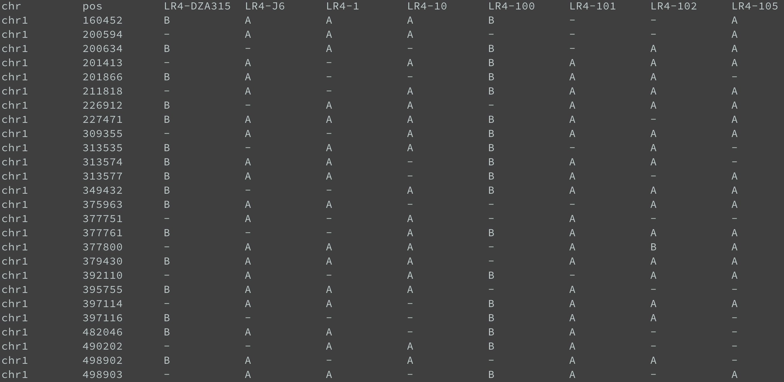
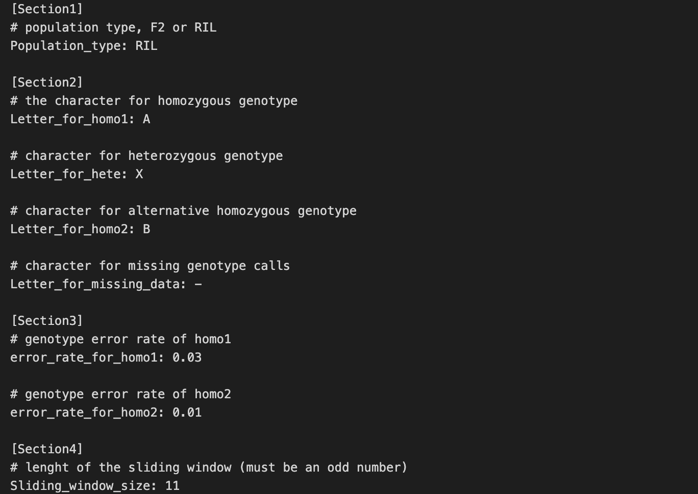
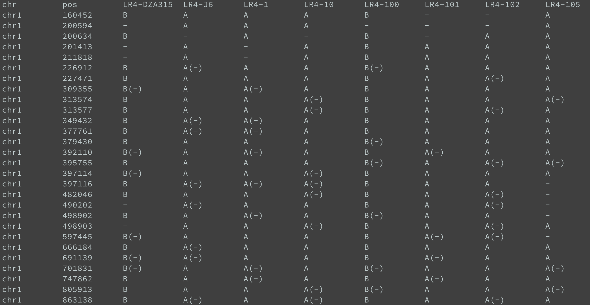

Genotype-Corrector Tutorial
Step 1: Prepare Genotype Data to the Required Data Format
The input genotype table is a tab-delimited text file containing genotypes for each sample/line in a population. Markers must be sorted by position within each chromosome or contig. A typical input genotype table format for GC should resemble the following: 
If your genotype data is in VCF format, you can use the following command-line tool to convert it to the required format:
Step 2: Quality Control (QC) on Genotype Data
Several QC steps are necessary before proceeding to the correction step. Example data for this demo can be found in the repository data directory.
QC on Missing Data
This step removes SNPs and samples with a higher-than-specified missing data ratio (--cutoff_snp and --cutoff_sample).
$ python -m schnablelab.GC.data_qc qc_missing RIL_X0.4miss0.35.map qc_missing.map --cutoff_snp 0.4 --cutoff_sample 0.4
RIL_X0.4miss0.35.map is an example input genotype table, and qc_missing.map is the resulting table after removing high missing ratio SNPs and samples.
QC on SNPs with Distorted Segregation Ratio
This step removes SNPs with highly distorted segregation ratios.
In this command,qc_missing.map is the table from the previous QC step, and qc_segregation.map is the resulting table.
QC on Homozygous Genotype Calls in Heterozygous Regions
This step identifies small regions (defined by read length in base pairs) where continuous homozygous genotype calls occur within a heterozygous region.
Here,qc_segregation.map is the table from the previous QC step, and qc_hetero.map is the resulting table. The process also generates a log file GC.qc_hetero.info detailing aggregated regions.
QC on Duplicated SNP Markers
This step aggregates consecutive markers with identical genotype calls across all samples/lines.
In this command,qc_hetero.map is the table from the previous QC step, and qc_dup.map is the resulting table. Use --diff_num to specify the number of tolerated different genotype calls between consecutive SNP markers (default is 0). Aggregation information is logged in GC.qc_dup.log.
Step 3. Conduct the Correction
Prepare the Configuration File
The configuration file defines parameters for the correction step. An example config file can be found here. You can modify it based on your own input data. 
Run Genotype-Corrector
Once you have the genotype table after QC and the configuration file, run Genotype-Corrector using:
Upon completion, the corrected genotype table qc_dup.corrected.map will be generated where missing values are imputed and genotype calls are corrected. Adding --debug parameter to above command line will generate an output table qc_dup.corrected.map.debug containing both corrected genotype calls followed by the original ones highlighted in parentheses as shown below.

You can manually debug results if you found obvious wrong corrections by GC in this file. After debugging, you can run python -m schnablelab.GC.corrector cleanup command to remove redudant info in the table. For conversion to other formats (e.g., R/QTL or MSTmap), use python -m schnable.GC.corrector format for downstream analyses.
Tips
- GC performs best with high-density marker datasets from high-throughput sequencing, where each contig should have at least hundreds of markers.
- Some missing values and genotype call corrections may not be performed by GC without strong supporting evidence.
- Grid search of input parameters (e.g., sliding window size) is recommended to achieve optimized results.